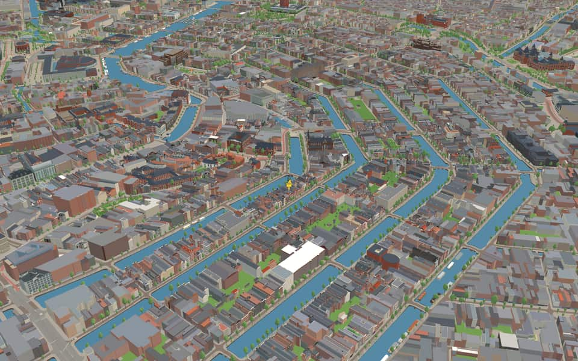
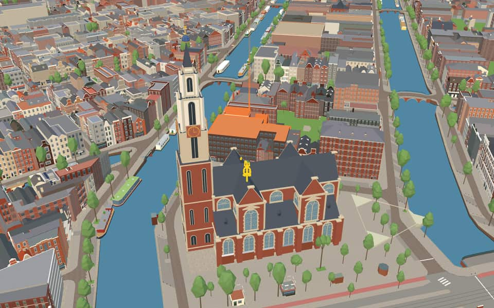
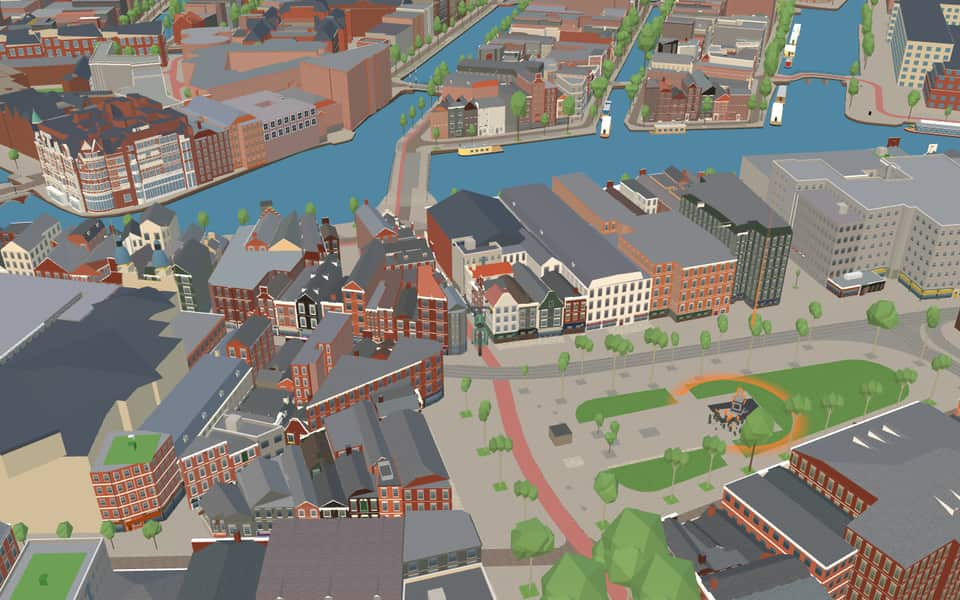
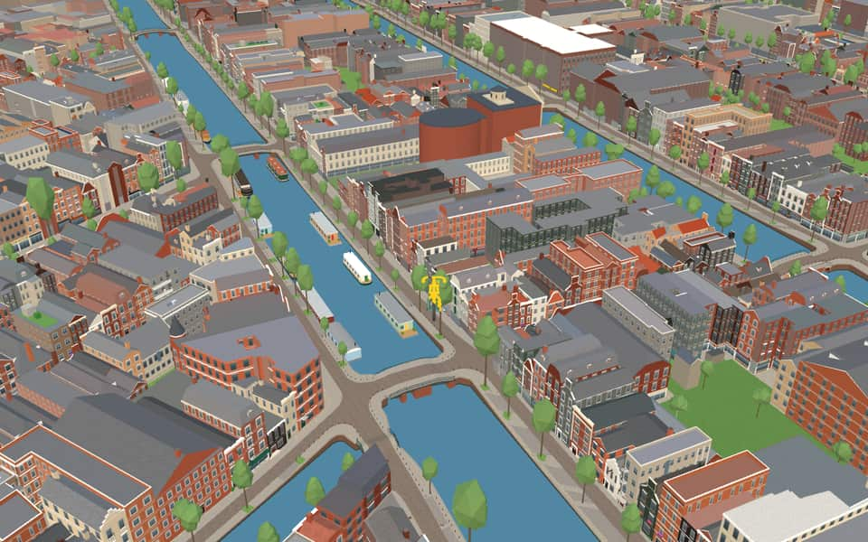

Quarter · Amsterdam
Grachtengordel
The Grachtengordel (lit. 'canal belt/girdle'), known in English as the Canal District, is a neighborhood in Amsterdam, Netherlands located in the Centrum district. The seventeenth-century canals of Amsterdam, located in the center of Amsterdam, were added to the UNESCO World Heritage List in August 2010. en.wikipedia.org


In the game
Frames from a ride through Grachtengordel.




6 more photos of Grachtengordel

.jpg){kind=link}

.jpg){kind=link}

.jpg){kind=link}

.jpeg){kind=link}


_bij_Amsterdam.jpg){kind=link}
Built here
Buildings modelled one by one for the ride.
Anne Frank House

De Kleine Komedie
Felix Meritis

- No picture yet
Huis Bartolotti
- No picture yet
Pathé Tuschinski

- No picture yet
De Dolphijn

Embassy of the Free Mind
Photo: Huis met de hoofden.jpg (Sander Petrus, CC BY-SA 4.0)
- No picture yet
Foam — Fodor Museum canal houses
- No picture yet
Westerkerk / Westertoren
- No picture yet
Huis Marseille — two canal houses
- No picture yet
De Rode Hoed / former Remonstrant church
- No picture yet
KattenKabinet

- No picture yet
Singelkerk


Voormalige Schouwburgpoort
Photo: Schouwbrug van campen1.jpg (Salomon Savery (1594-c.1678), a printmaker and publisher, Public domain)
- No picture yet
Keizersgrachtkerk

Multatuli Museum — Korsjespoortsteeg20
Photo: 2022 Korsjespoortsteeg 20, Asd-Multatulimuseum (2).jpg (Ceescamel, CC BY-SA 4.0)
- No picture yet
Rembrandtmonument
- No picture yet
Thorbecke statue
- No picture yet
NIOD Institute for War, Holocaust, and Genocide Studies


.jpg){kind=link}
25 more modelled buildings
- Museum of the Canals — Herengracht 386 Landmark model
- Coymanshuis Landmark model
- De Krijtberg Landmark model
- Pulitzer Amsterdam Landmark model
- Krijtberg Hand-built landmark
- Tuschinski Hand-built landmark
- Westerkerk Hand-built landmark
- Utrechtsestraat 76 to 48 (10 houses) Surveyed street front
- Amstelstraat 16–22 Modelled building
- Brouwersgracht 1–5 / Singel 16, 22–26 Modelled building
- De Bazel Modelled building
- Herengracht 459–463 / Reguliersdwarsstraat 12–16 modern office block Modelled building
- Keizersgracht 569–575 Modelled building
- Keizersgracht 603 / Vijzelstraat 79 office block Modelled building
- Kerkstraat 136 (Hans Brinker) Modelled building
- Kerkstraat 206–210 ordinary modern row Modelled building
- Keysersveste apartments, Keizersgracht 28–36 Modelled building
- Nieuwe Spiegelstraat3–17 / Keizersgracht555 historic office and arcade wing Modelled building
- Prinsengracht 211–213 Modelled building
- Prinsengracht 215–217 Modelled building
- Prinsengracht 759–769 / Kerkstraat 126 Modelled building
- Prinsengracht485–487 Modelled building
- Singel 152–158 / Bergstraat 1–3 former Twentsche Bank archive Modelled building
- Singel 532–540 / Reguliersdwarsstraat 59–63 gray stone office block Modelled building
- Utrechtsestraat 15 / Rembrandtplein, Amsterdam (Booking.com HQ) Modelled building
Did you know
Trivia the ride can show you here.
- Work on the Herengracht, Keizersgracht and Prinsengracht began in 1613, during the Twelve Years' Truce. Wikipedia
- The hiding place in the Anne Frank House was only about 42 m², yet Anne wrote that it was relatively luxurious. Wikipedia
- Hendrick de Keyser designed the Westerkerk, built between 1620 and 1631. Wikipedia
- The Herengracht's Gouden Bocht (Golden Bend) is known for its large and beautiful canal houses. Wikipedia
- The Herengracht was named in 1612 after the city's ‘Heren Regeerders’, its Gentlemen Governors. Wikipedia
- The Homomonument is made of three triangles of pink granite. Wikipedia
- The writer Multatuli, Eduard Douwes Dekker, was born in the house that is now the Multatuli Museum. Wikipedia
- Legend says the heads on the Huis met den Hoofden are six burglars beheaded by the maid. Wikipedia
- In Dutch, ‘grachtengordel’ is also shorthand for the supposed elitist attitude of people living in the city centre. Wikipedia (translated from Dutch)
- Anne Frank HouseThe hiding space was just 450 square feet yet considered luxurious by its inhabitants. en.wikipedia.org
- Anne Frank HouseAfter the arrest, seized belongings were distributed to bombed-out families in Germany. en.wikipedia.org
- Anne Frank HouseAnne Frank died during the war before her diary was published in 1947. en.wikipedia.org
- Anne Frank HouseIn 2017, the site welcomed 1.27 million visitors. en.wikipedia.org
- Cat CabinetFounder Bob Meijer named the museum after his red tomcat, John Pierpont Morgan. en.wikipedia.org
137 more facts
- Cat CabinetThe owner lives on the second floor of the building with his family. en.wikipedia.org
- Christelijke Gereformeerde Kerk - AmstelkerkPlans to build the Dutch Mint next door were drawn up but never executed. en.wikipedia.org
- Collectie SixJan Six VI's six children renounced succession rights to keep the collection intact. nl.wikipedia.org
- Collectie SixCollectie Six is the shared patrimony of the Six family. nl.wikipedia.org
- De DolphijnHendrick de Keyser's original facade design was simplified by removing classicist pilasters and cornices. nl.wikipedia.org
- De Kleine KomedieThe directors fled or stepped down in 1787 due to their anti-Orange political sympathies. en.wikipedia.org
- De Kleine KomedieHenry Hope ran the establishment until he was forced to flee before Napoleon's army arrived in 1794. en.wikipedia.org
- De Kleine KomedieThe auditorium holds exactly 503 seats for its performances. en.wikipedia.org
- Embassy of the Free MindAmsterdam businessman Joost Ritman founded the collection as a private library in 1958. en.wikipedia.org
- Embassy of the Free MindThe institution moved to Bloemstraat and opened to the public in 1984. en.wikipedia.org
- Embassy of the Free MindThe collection features Hermetic, alchemical, astrological, magical, mystical, kabbalistic and Rosicrucian texts. en.wikipedia.org
- Felix MeritisFive sculptures on the façade represent the society's five departments: arts, literature, trade, sciences, and music. en.wikipedia.org
- Felix MeritisA fire destroyed part of the structure in 1932. en.wikipedia.org
- Felix MeritisOn November 4, 1956, the building was stormed by protesters against the Soviet invasion of Hungary. en.wikipedia.org
- Felix MeritisIn 1969, the Shaffy Theatre opened here as a hub for the Dutch avant-garde. en.wikipedia.org
- foamArchitects BenthemCrouwel converted three Keizersgracht buildings into the modern space. en.wikipedia.org
- foamFoam presents short exhibitions for young photographers alongside major retrospectives. en.wikipedia.org
- foamA major Helmut Newton retrospective was presented by the museum in summer 2016. en.wikipedia.org
- foamThe institution publishes a quarterly international photography magazine called Foam Magazine. en.wikipedia.org
- Het Huis met den HoofdenWealthy stock trader Nicolaas Sohier commissioned the house in 1622. en.wikipedia.org
- Het Huis met den HoofdenPieter de Keyser likely executed the Renaissance façade after his father died. en.wikipedia.org
- Het Huis met den HoofdenLegends claim a maid beheaded six thieves, inspiring the facade heads. en.wikipedia.org
- Het Huis met den HoofdenSohier's wife and two daughters died shortly after he moved into the house. en.wikipedia.org
- HomomonumentIn 1970, police removed a wreath laid by activists at Dam Square, declaring it insulting to the dead. en.wikipedia.org
- HomomonumentDesigner Karin Daan created the structure to fit the historic landscape without disturbing it. en.wikipedia.org
- Huis BartolottiA major restoration between 1968 and 1971 rebuilt the simplified upper facade. nl.wikipedia.org
- Huis BartolottiWillem van den Heuvel built this house after receiving a large inheritance in 1617. nl.wikipedia.org
- Huis BartolottiA daughter named Jacoba Victoria was born here in 1639. nl.wikipedia.org
- KeizersgrachtkerkA 1663 decree forbidding construction on inner lands forced the church to relocate its plan. nl.wikipedia.org
- KeizersgrachtkerkTwo priests were shot dead by German occupiers in September 1944 after weapons were found in a church annex. nl.wikipedia.org
- Marseille HouseThe house bears the name of Marseille, a city depicted on its façade stone. en.wikipedia.org
- Marseille HouseFrench merchant Isaac Focquier built this canal house around 1665. en.wikipedia.org
- Marseille HouseUnlike traditional galleries, the space avoids white walls to use authentic light-filled rooms. en.wikipedia.org
- Multatuli MuseumA separate, unaffiliated Multatuli Museum opened in Rangkasbitung, Indonesia in 2018. en.wikipedia.org
- Multatuli MuseumMultatuli died on a distinctive red couch that remains in the house today. en.wikipedia.org
- Multatuli MuseumOver five thousand of his manuscripts are preserved separately at the University of Amsterdam. en.wikipedia.org
- Museum of the CanalsA dollhouse displays the house rooms using the Pepper's ghost optical illusion technique. nl.wikipedia.org
- Museum of the CanalsAfter a brief closure for renovation, the museum reopened at the end of March 2012. nl.wikipedia.org
- Museum of the CanalsBanker Jan Willink once lent the US government over 30 million guilders during their revolution. nl.wikipedia.org
- Museum of the CanalsA back room preserves 1776 wallpaper by Jurriaen Andriessen depicting idealized Dutch landscapes. nl.wikipedia.org
- Museum Van LoonThe Van Loon family resided here continuously for over sixty years from 1884 until 1945. en.wikipedia.org
- Museum Van LoonThora van Loon-Egidius served as a lady-in-waiting to Queen Wilhelmina of the Netherlands. en.wikipedia.org
- Museum Van LoonFour sculptures of Ceres, Mars, Minerva and Vulcan crown the house. en.wikipedia.org
- Museum Van LoonFamous architect Adriaan Dortsman designed the house in 1672. en.wikipedia.org
- NIOD Institute for War, Holocaust, and Genocide StudiesThe name NIOD Institute for War, Holocaust, and Genocide Studies combines the Dutch acronym NIOD with its full English title. en.wikipedia.org
- NIOD Institute for War, Holocaust, and Genocide StudiesSince January 1, 1999, the organization has belonged to the Royal Netherlands Academy of Arts and Sciences. en.wikipedia.org
- NIOD Institute for War, Holocaust, and Genocide StudiesThe institute administers archives of the Japanese occupation of the Dutch East Indies. en.wikipedia.org
- Pathé de MuntFrench architect Christian de Portzamparc collaborated on the modern building's design. nl.wikipedia.org
- Pathé de MuntThe venue spans three floors with 13 rooms and a total of 1829 seats. nl.wikipedia.org
- Pathé Tuschinski CinemaFounder Abraham Tuschinski opened the venue with a theatre organ he personally sourced from Brussels. en.wikipedia.org
- Pathé Tuschinski CinemaThe architecture blends Art Deco, Art Nouveau, Jugendstil, and the Amsterdam School styles. en.wikipedia.org
- Pathé Tuschinski CinemaThe main auditorium hosts both films and live performances on a stage equipped with an organ. en.wikipedia.org
- Rembrandt van Rijn statueThe statue depicts Rembrandt sitting on a box with initials RVR, holding a pencil and sketchbook. nl.wikipedia.org
- Rembrandt van Rijn statueLouis Royer secured the commission in July 1842 despite an intended design competition. nl.wikipedia.org
- SingelkerkA major 1839 renovation replaced the roof and Herengracht facade with their current shapes. nl.wikipedia.org
- SingelkerkThe original entrance consisted of semicircular doors located at Singel 454. nl.wikipedia.org
- Sint-Franciscus XaveriuskerkA Jesuit church has stood on this site since 1654, replacing earlier clandestine versions. en.wikipedia.org
- Sint-Franciscus XaveriuskerkArchitect Alfred Tepe designed the current Neo-Gothic structure to be unusually tall due to space limits. en.wikipedia.org
- Sint-Franciscus XaveriuskerkThe interior was furnished by members of the Guild of St. Bernulphus, notably the Mengelberg firm. en.wikipedia.org
- Sint-Franciscus XaveriuskerkAlfred Tepe designed this church, which opened its doors in 1883. en.wikipedia.org
- Thorbecke statueA Scheveningen coachman who resembled Thorbecke served as the model for the statue. nl.wikipedia.org
- Thorbecke statueThe figure leans on a Greek pillar with one hand while holding a law scroll in the other. nl.wikipedia.org
- Thorbecke statueInscriptions on the pedestal call him a true people's friend and loyal servant of the crown. nl.wikipedia.org
- Thorbecke statueA low wrought iron fence surrounds the entire area where the statue stands. nl.wikipedia.org
- Voormalige SchouwburgpoortJacob van Campen coined the Dutch word Schouwburg when designing this theatre in 1637. en.wikipedia.org
- Voormalige SchouwburgpoortThe architrave above the surviving entrance bears Vondel's inscription about the world being a stage. en.wikipedia.org
- WesterkerkHendrick de Keyser designed the church, but his son Pieter finished its construction. en.wikipedia.org
- WesterkerkUnlike older Amsterdam churches converted in 1578, this was built specifically for Protestant worship. en.wikipedia.org
- WesterkerkA concert featuring music from Rembrandt's era is held annually on July 15th. en.wikipedia.org
- WestertorenThe tower underwent a major restoration from February 2023 until early 2025. nl.wikipedia.org
- Willet-HolthuysenJacob Hop, who served as mayor of Amsterdam, originally commissioned the house around 1685. en.wikipedia.org
- Willet-HolthuysenThe exterior was redesigned in 1739 to reflect the fashionable Louis XIV style of that era. en.wikipedia.org
- Willet-HolthuysenLouisa Holthuysen bequeathed the property to Amsterdam in 1895, naming it after herself and her husband Abraham Willet. en.wikipedia.org
- Willet-HolthuysenThe garden and kitchen were restored in 1972. en.wikipedia.org
- Rembrandt SquareBy 1655, farmers sold dairy and poultry here, earning the name Botermarkt or butter market. en.wikipedia.org
- Rembrandt SquareIn 1876, a statue of Rembrandt moved to the center, renaming the site Rembrandt Square. en.wikipedia.org
- Rembrandt SquareAutumn fairs once replaced farmer stalls with dance orchestras and circus tents. en.wikipedia.org
- Rembrandt SquareA massive 114-square-meter LCD screen once held the title of Europe's largest display. en.wikipedia.org
- DeutzenhofjeThe gablestone inscription honors Agneta's love and faith for the poor. en.wikipedia.org
- DeutzenhofjeAn old pump remains in the garden planted with summer flowers. en.wikipedia.org
- DeutzenhofjeTwo outer double houses serve as rental homes to generate income for the hofje. en.wikipedia.org
- Brug 19A bridge at this spot appeared on Pieter Bast's 1599 map when the canal was a defensive moat. nl.wikipedia.org
- Brug 19The current viaduct with a passage was installed in July 1977 after months of work. nl.wikipedia.org
- Brug 21Despite matching its neighbor structurally, this bridge lacks municipal monument status while the other has it. nl.wikipedia.org
- Brug 24Traffic pressure forced a lowering of the bridge in 1882 to ease steep slopes. nl.wikipedia.org
- Brug 38In 1907, officials decided against draining the canal, allowing repairs to proceed. nl.wikipedia.org
- Brug 38A local newspaper declared the rebuilt bridges would no longer frighten Amsterdam horses. nl.wikipedia.org
- Brug 39The vaulted structure spans 6.80 meters wide with a clearance height of 2.38 meters. nl.wikipedia.org
- Brug 40Historical stones marked 1729 and Anno were removed during the 1908 renovation. nl.wikipedia.org
- Brug 42Construction of the current arched bridge slowed traffic for nearly a year while a temporary crossing was used. nl.wikipedia.org
- Brug 43Sculptor Hildo Krop designed sculptures for the bridge, which were manufactured by stonemason Johan Polet. nl.wikipedia.org
- Brug 47Reinier Vinkeles painted this spot around 1762 before the nearby theater burned down. nl.wikipedia.org
- Brug 51A 1864 tender specified rebuilding the structure as a stone wolf bridge. nl.wikipedia.org
- Brug 51Polish granite arch stones were polished outside but left rough on the inside. nl.wikipedia.org
- Brug 51Nearby Keizersgracht 174-176 once housed Greenpeace after serving as the First Dutch Life Insurance Bank office. nl.wikipedia.org
- Brug 52A 1896 version by Jacob Olie featured three passages and no arches. nl.wikipedia.org
- Brug 53A bridge with five arches stood here as early as a 1618 map of the area. nl.wikipedia.org
- Brug 68City architect Bastiaan de Greef designed the original bridge around 1860. nl.wikipedia.org
- Brug 68The original orphanage for poor children and widows merged with the nearby Palace of Justice in the nineteenth century. nl.wikipedia.org
- Brug 74Facade stones on the north side mark the current structure as dating from 1780. nl.wikipedia.org
- Hendrick Jacobsz StaetsbrugStone markers on the Amstel side date the current structure to the year 1728. nl.wikipedia.org
- Isa van EeghenbrugGranite stones on the pillars mark the year 1922 as the completion date of the current structure. nl.wikipedia.org
- Isa van EeghenbrugRestoration work revealed that the pontoons were positioned 2.6 centimeters too low, damaging sightseeing boats. nl.wikipedia.org
- Johanna BorskibrugThe namesake was a 19th-century financier born on Vijzelstraat. nl.wikipedia.org
- Johanna BorskibrugArchitect Jo van der Mey designed this bridge to visually unite with its neighbors during a 1911 street widening. nl.wikipedia.org
- KrijtbergbrugKrijtbergbrug also bears the nickname Rijtjesbrug, derived from the local moniker for De Krijtberg. nl.wikipedia.org
- KrijtbergbrugA bridge at this location has stood since at least 1649, visible on Joan Blaeu's early maps. nl.wikipedia.org
- Lucas Jansz SinckbrugThe current stone structure dates to 1769, confirmed by an inscribed stone on the northern wall. nl.wikipedia.org
- Marten ToonderbrugA horse pulling a wagon of flour sacks ran into a piano store in 1926 and earned the nickname The musical horse. nl.wikipedia.org
- PastoorsbrugThe name Pastoorsbrug likely references a nearby hidden church from 1663 or its 1837 replacement, Sint Ignatius. nl.wikipedia.org
- PastoorsbrugThe current welf bridge features three passages to better fit the historic cityscape. nl.wikipedia.org
- SteenhouwerijbrugSteenhouwerijbrug takes its name from the nearby Stadsmetseltuin garden. nl.wikipedia.org
- SteenhouwerijbrugA simple plate bridge replaced the arch in the late nineteenth century. nl.wikipedia.org
- SteenhouwerijbrugThe 1978 reconstruction used a concrete span hidden beneath an arch style. nl.wikipedia.org
- Van MierlobrugVan Mierlobrug honors D66 founder Hans van Mierlo, who lived nearby and walked across it to his pub. nl.wikipedia.org
- Vier HeemskinderenbrugA striking design quirk is the abrupt transition where the bridge meets the quay on both sides without a gradual slope. nl.wikipedia.org
- BeulingslootGerrit Jansz Beulinck lived here around 1660 and displayed a signboard with his name. nl.wikipedia.org
- BeulingslootUnlike most Amsterdam canals, this waterway has no guard gates. nl.wikipedia.org
- BlauwburgwalBefore 1612, this waterway was known as Blauwburgwal Lijnbaansgracht. en.wikipedia.org
- BlauwburgwalBlauwburgwal 22 features a unique raised bell gable with curved walls decorated by fruit and urns. en.wikipedia.org
- HerengrachtBefore becoming a canal, this waterway served as a defensive moat dug in 1585. en.wikipedia.org
- HerengrachtA distinct kink at Driekoningenstraat remains from the original outer moat's route around a stronghold. en.wikipedia.org
- KeizersgrachtMayor Frans Hendricksz Oetgens and surveyor Lucas Jansz Sinck initiated its first section in 1615. en.wikipedia.org
- KeizersgrachtCity planners briefly considered turning this waterway into a dry boulevard like The Hague's Lange Voorhout. en.wikipedia.org
- KeizersgrachtThe first Italian opera was performed on the site in 1680 by Dirck Strijcker. en.wikipedia.org
- KeizersgrachtHendrik Carloff and Jan Valckenburgh, residents of the canal, were both involved in the slave trade between the Gold Coast and South America. en.wikipedia.org
- LeidsegrachtThe canal received its name, Leidsegracht, in 1658 after the city of Leiden. en.wikipedia.org
- LeidsegrachtHydraulic engineer Cornelis Lely was born at number 39 on this canal. en.wikipedia.org
- LeliegrachtExcavation began after 1612 when the canal belt was created south of the Brouwersgracht. en.wikipedia.org
- LeliegrachtA lock remains visible on the Prinsengracht side to manage different water levels. en.wikipedia.org
- LeliegrachtThe Astoria building at the corner features Art Nouveau architecture built in 1905. en.wikipedia.org
- LeliegrachtA pair of houses with neck gables dates back to around 1725. en.wikipedia.org
- ReguliersgrachtThe canal was established in 1658 within Amsterdam's historic Grachtengordel. en.wikipedia.org
- ReguliersgrachtDuring WWII, the illegal paper Het Parool operated from house number 111 there. en.wikipedia.org
- ReguliersgrachtWriter Simon Carmiggelt and his family occupied that specific house during the war. en.wikipedia.org
- BlauwbrugThe Blauwbrug (Blue bridge) keeps a name from a vanished wooden structure painted the Dutch flag's blue around 1600. en.wikipedia.org
- BlauwbrugStone bases mimic ship bows and support columns topped with the Imperial Crown of Austria. en.wikipedia.org
Names on the map
Where the canal, bridge and street names come from.
Canals and water
- BeulingslootNamed after one of the residents, Gerrit Jansz Beulinck, who lived here around 1660. He may have made this known with a hanging sign. In the sixteenth century the names Leertouwersstraat and Leertouwerssloot, and also Huidevettersstraat and Huidevetterssloot, occur here (leertouwers and huidevetters were tanners).
- BlauwburgwalProbably named after the Blauwe Brug (blue bridge). The canal was dug at the end of the sixteenth century. The present name occurs from 1614. Before that it was called the canal of the Blauwe brugge outside the Jan Roonpoort, or the cross canal (dwarse burgwal) by the Blauwe brugge. Most bridges at that time were painted red.
- HerengrachtAfter the Heren Regeerders (the lords who governed the city; in the old days the city was not administered but ruled). The canal already existed as a ditch when in 1612 it was widened into today's canal, the first of the three main canals. The stretch beyond the Leidsegracht belongs to the expansion of 1658, as does the Nieuwe Herengracht.
- KeizersgrachtAfter Emperor Maximilian, Archduke of Austria, who in 1489 granted Amsterdam the privilege of bearing the imperial crown on its coat of arms.
- LeidsegrachtThe city of Leiden. All these streets date from the great city expansion of 1658. The Leidsestraat got its name because it led to the Leidsepoort (Leiden gate). It is part of the old Heiligeweg.
- LeliegrachtAll these streets are named after the oldest of them, the Oude Leliestraat, already mentioned in 1560. It takes its name from the house 'In de witte lelye' (in the white lily) on the Singel near the Jan Rodenpoortstoren (Torensluis). After 1612 the name passed to the canal dug in line with it, and finally to the Nieuwe Leliestraat and cross streets in the Jordaan.
- ReguliersgrachtAll these names recall the Reguliers monastery (of the Canons Regular), which stood from 1394 to 1532 outside the city gate of the time, where the Utrechtsestraat and the Keizersgracht now cross. The city gate, of which the Munttoren is a remnant, was once called the Regulierspoort. The Reguliersgracht then ended at that gate. Parts of it were filled in in the seventeenth and eighteenth centuries. Before 1909 the Regulierssteeg was called Watersteeg.
Bridges
- Anton JolingbrugAntonius Jacobus Joling (1857-1934), architect. He learned his trade under Pierre Cuypers (1827-1921) and set up on his own around 1887. He mainly designed public buildings such as offices, hospitals and schools. The Peek & Cloppenburg building on the Dam is by Joling.Bridge 20: a steel bridge for road traffic, dated 1793 in the city's bridge register.
- Brug 19Bridge 19: a brick bridge for road traffic, dated 1977 in the city's bridge register.
- Brug 21Bridge 21: a steel bridge for road traffic, dated 1793 in the city's bridge register.
- Brug 24Bridge 24: a steel bridge for road traffic, dated 1824 in the city's bridge register.
- Brug 38Bridge 38: a brick bridge for road traffic, dated 1909 in the city's bridge register.
- Brug 39Bridge 39: a brick bridge for road traffic, dated 1909 in the city's bridge register.
- Brug 40Bridge 40: a brick bridge for road traffic, dated 1909 in the city's bridge register.
- Brug 42Bridge 42: a brick bridge for road traffic, dated 1980 in the city's bridge register.
- Brug 43Bridge 43: a steel bridge for road traffic, dated 1788 in the city's bridge register.
- Brug 46Bridge 46: a brick bridge for road traffic, dated 1979 in the city's bridge register.
- Brug 47Bridge 47: a brick bridge for road traffic, dated 1979 in the city's bridge register.
- Brug 51Bridge 51: a brick bridge for road traffic, dated 1982 in the city's bridge register.
23 more bridges with a story
- Brug 52Bridge 52: a brick bridge for road traffic, dated 1981 in the city's bridge register.
- Brug 53Bridge 53: a brick bridge for road traffic, dated 1951 in the city's bridge register.
- Brug 68Bridge 68: a steel bridge for road traffic, dated 1866 in the city's bridge register.
- Brug 73Bridge 73: a brick bridge for road traffic, dated 1871 in the city's bridge register.
- Brug 74Bridge 74: a brick bridge for road traffic, dated 1725 in the city's bridge register.
- Grote BrouwerssluisBridge 62: a steel bridge for road traffic, dated 1615 in the city's bridge register.
- Hendrick Jacobsz StaetsbrugThis fixed bridge is named after Hendrick Jacobsz. Staets (1558 - 1631). He was the city carpenter, who together with Lucas Sinck, Henrick de Keijser and Frans Oetgens prepared and partially carried out the Explanation of 1612 and thus laid the foundation for the Amsterdam canal belt. He also completed the Noorderkerk after the death of Henrick de Keijser. An old name for this bridge was the Caspar Philipssluis, named after Caspar Philips, Jacobsz (1732-1789), an Amsterdam cartographer, who is best known for his Grachtenboek from 1771.Bridge 35: a brick bridge for road traffic, dated 1728 in the city's bridge register.
- Isa van EeghenbrugIsabelle Henriette van Eeghen (1913-1996), archivist and historian. Between 1944 and 1978, at the City Archives near this bridge, she produced many works, among them a substantial study of Amsterdam's booksellers. She arranged the purchase of Jacob Olie's (1834-1905) photograph collection. A board member of the Genootschap Amstelodamum, she received the Silver Medal (Zilveren Penning) in 1971.Bridge 30: a steel bridge for road traffic, dated 2021 in the city's bridge register.
- Johanna BorskibrugJohanna Borski (1764-1846) was called 'the financier of the Netherlands' because she invested in visionary projects such as De Nederlandsche Bank, the Nederlandsche Handel-Maatschappij and the Hollandsche IJzeren Spoorweg-Maatschappij (railway company). She twice saved the Dutch state from bankruptcy. She was born Johanna van der Velde on the Vijzelstraat and had her office on the Keizersgracht near the Spiegelstraat. This bridge looks out on the building of the Nederlandsche Handel-Maatschappij, which she helped found and twice saved from ruin.Bridge 41: a steel bridge for road traffic, dated 2021 in the city's bridge register.
- Kees FensbrugKees Fens (1929-2008) was an Amsterdam literary critic, essayist and man of letters. He received the P.C. Hooft Prize in 1990 and an honorary doctorate from the University of Amsterdam in 2004. From his house he looked out on this bridge, and in 2008 he published the book 'Het geluk van de brug' (the happiness of the bridge).Bridge 49: a brick bridge for road traffic, dated 1982 in the city's bridge register.
- KrijtbergbrugNamed after the nearby Krijtberg, or St Francis Xavier church (sometimes also called the Rijtjeskerk), on the Singel. Consecrated in 1883, the church replaced the former clandestine church in the house de Crijtberg, served by the Jesuits.Bridge 3: a steel bridge for road traffic, dated 1768 in the city's bridge register.
- Lucas Jansz SinckbrugThis fixed bridge is named after Lucas Jansz. Sinck. He was the city surveyor, who together with Hendrik Staets, Frans Oetgens and Henrick de Keijser prepared and partially carried out the Explanation of 1612 and thus laid the foundation for the Amsterdam canal belt.Bridge 36: a brick bridge for road traffic, dated 1769 in the city's bridge register.
- Marten ToonderbrugMarten Toonder (Rotterdam, 2 May 1912 - Laren, 27 July 2005) was a Dutch comics author. Besides his great role in literature, Toonder also put his talents to use during the Second World War.Bridge 48: a brick bridge for road traffic, dated 1979 in the city's bridge register.
- Niek EngelschmanbrugThis fixed bridge is named after Niek Engelschman (1914-1988), who also called himself Bob Angelo. He was very active in the struggle for gay emancipation and founded the COC.Bridge 106: a steel bridge for road traffic, dated 1895 in the city's bridge register.
- Noordsche CompagniebrugNamed after the Noordsche or Groenlandsche Compagnie (Northern or Greenland Company), which had its warehouses at Keizersgracht 40-44, the so-called Groenlandsche pakhuizen.Bridge 54: a steel bridge for road traffic, dated 1786 in the city's bridge register.
- PastoorsbrugThe origin of this fixed bridge's name (pastor's bridge) is not known for certain. Perhaps the former Roman Catholic clandestine church 'De Zaaier' at Keizersgracht 22 had something to do with it.Bridge 55: a brick bridge for road traffic, dated 1966 in the city's bridge register.
- Rachel RuyschbrugRachel Ruysch (The Hague, 1664 - Amsterdam, 1750) was one of the most successful still-life painters of the seventeenth and eighteenth centuries, world-famous for her colourful, lifelike flower paintings. As a married woman and mother of ten children she carried on her brilliant career undiminished.Bridge 25: a steel bridge for road traffic, dated 1791 in the city's bridge register.
- SteenhouwerijbrugNamed after the stonemasons who worked in the City Masonry Yard (Stads Metseltuin) on the Leidsegracht.Bridge 45: a brick bridge for road traffic, dated 1978 in the city's bridge register.
- Tante SaarbrugSara Bacharach, better known as Tante Saar (Aunt Saar), honorary citizen of Amsterdam, sold flowers on the Rembrandtplein for more than sixty years and kept her stock on the Thorbeckeplein. She was a well-known Amsterdam figure. In bitter poverty she earned a living for her family of nine children by selling flowers: early in the morning she took a little train to the auction in Aalsmeer to buy them, first walking the city with a basket and later keeping a stall on the Rembrandtplein. She survived several concentration camps and lost three children and six grandchildren, but she was a very strong woman, and much about her is recorded in the Amsterdam archives.Bridge 31: a brick bridge for road traffic, dated 1725 in the city's bridge register.
- Van MierlobrugHenricus Antonius Franciscus Maria Oliva (Hans) van Mierlo (Breda, 18 August 1931 - Amsterdam, 11 March 2010), Dutch journalist and politician. In 1966 he and Hans Gruijters were the main founders of the social-liberal party Democraten '66, which he led in two separate periods, sitting in both the Senate and the House of Representatives. In the 1980s he was Minister of Defence in the Van Agt II and III cabinets, and from 1994 to 1998 Minister of Foreign Affairs and deputy prime minister in the 'purple' Kok I cabinet, which came about partly thanks to him. In 1998 he left politics and was given the title Minister of State.Bridge 18: a brick bridge for road traffic, dated 1977 in the city's bridge register.
- Vier HeemskinderenbrugBridge 28: a brick bridge for road traffic, dated 1722 in the city's bridge register.
- WarmoesbrugNamed after the former Warmoesgracht, filled in to make the Raadhuisstraat.Bridge 22: a steel bridge for road traffic, dated 1827 in the city's bridge register.
- West-Indische HuisbrugThis fixed bridge is named after the nearby West-Indisch Huis (West India House).Bridge 17: a steel bridge for road traffic, dated 1900 in the city's bridge register.
2 other bridges without a recorded story
Kaassluis · Vingboomsbrug
Streets
- AmstelThe river to which Amsterdam owes its name and its origin.
- AmstelstraatThe river.
- AmstelveldThe river.
- Anton JolingbrugAntonius Jacobus Joling (1857-1934), architect. He learned his trade under Pierre Cuypers (1827-1921) and set up on his own around 1887. He mainly designed public buildings such as offices, hospitals and schools. The Peek & Cloppenburg building on the Dam is by Joling.
- BakkersstraatThis street, first recorded under this name in 1604, owes its name to the 'Backhuis' (bakehouse) that stood here from around 1595 to 1603. Ship's biscuits for the VOC were baked here.
- BerenstraatIn the seventeenth century, the tanneries and the hide trade were located in the adjacent part of what is now the Jordaan. This trade included bearskins.
- BergstraatThe street already existed under this name before it came to lie within the city rampart during the expansion of 1593. It is known that from 1633 a house stood here with a gable stone depicting Mount Sinai. Whether such a building also existed before then, and whether it gave the street its name, is not known.
- BeulingstraatNamed after one of the residents, Gerrit Jansz Beulinck, who lived here around 1660. He may have made this known with a hanging sign. In the sixteenth century the names Leertouwersstraat and Leertouwerssloot, and also Huidevettersstraat and Huidevetterssloot, occur here (leertouwers and huidevetters were tanners).
- BlauwbrugThe name of this fixed bridge recalls an earlier version of it, which after the Alteration of Amsterdam in 1578 was painted in the blue of Nassau. The present bridge dates from 1884. Its architects, B. de Greef and W. Springer, took their inspiration from a bridge over the Seine. Another name for this bridge was Sophiabrug, but through all the changes the name Blauwbrug was kept. That other name for the Blauwbrug never caught on, just as Sophiaplein never did for the Muntplein. Sophia of Württemberg (1817-1877) was the first wife of King Willem III, who opened this renewed bridge in 1839.
- BlauwburgwalProbably named after the Blauwe Brug (blue bridge). The canal was dug at the end of the sixteenth century. The present name occurs from 1614. Before that it was called the canal of the Blauwe brugge outside the Jan Roonpoort, or the cross canal (dwarse burgwal) by the Blauwe brugge. Most bridges at that time were painted red.
- BrouwersgrachtNamed after the many breweries found in this neighbourhood in the sixteenth and seventeenth centuries. The prefixes Binnen (inner) and Buiten (outer) refer to the location in relation to the Haarlemmerdijk.
- DriekoningenstraatNamed after a shop sign of the corner building on the Singel (the Three Kings). The name is mentioned as early as 1608. Before that the little street was called Lijnbaanstraat.
55 more streets with a story
- GasthuismolensteegOn the city rampart (the Singel), where the alley is now, stood the mill of the Sint Elisabethsgasthuis (fifteenth and sixteenth centuries). The Sint Elisabethsgasthuis was the city's oldest hospital, founded in the fourteenth century. In 1492 its building was added to the city hall. Both buildings were later demolished to build the new city hall (now the palace). Before 1913 this was the Wijde Gasthuismolensteeg; earlier still the names Molensteeg and Benninghstraat occur.
- GeelvinckssteegOn the corner of this alley there once stood two warehouses called De Geelvinck. The name first appears in the last years of the sixteenth century.
- HalvemaansteegThe origin of this name may lie in the façade of no. 18, marked 'van ouds de Halve Maan' (of old the Half Moon). It is also possible that the bridge gave the name: in 1626 the Halvemaansbrug was given a half-curved shape (now straight). But the alley's name is already mentioned at the beginning of the seventeenth century, so it would be older than the bridge.
- HartenstraatRecalls the tanners and the hide trade once based in this neighbourhood. Hart is an old form of hert (deer).
- HeiligewegsluisAfter the Miracle of Amsterdam, the chapel 'Ter Heilige Stede' (later the Nieuwezijds Kapel) was founded between the Rokin and the Kalverstraat. For the pilgrims a road was then laid beside the Heiligewegsevaart (later the Overtoom) from Sloten to the Kalverstraat, called the Heiligeweg (holy way). Our street is what remains of that pilgrimage route. In old documents the Leidsestraat is also called Heiligeweg.
- HerengrachtAfter the Heren Regeerders (the lords who governed the city; in the old days the city was not administered but ruled). The canal already existed as a ditch when in 1612 it was widened into today's canal, the first of the three main canals. The stretch beyond the Leidsegracht belongs to the expansion of 1658, as does the Nieuwe Herengracht.
- HerenstraatAfter the Heren Regeerders (the lords who governed the city; in the old days the city was not administered but ruled). The canal already existed as a ditch when in 1612 it was widened into today's canal, the first of the three main canals. The stretch beyond the Leidsegracht belongs to the expansion of 1658, as does the Nieuwe Herengracht.
- HuidenstraatAfter the hide trade (huiden: hides) concentrated here in earlier centuries.
- Kees FensbrugKees Fens (1929-2008) was an Amsterdam literary critic, essayist and man of letters. He received the P.C. Hooft Prize in 1990 and an honorary doctorate from the University of Amsterdam in 2004. From his house he looked out on this bridge, and in 2008 he published the book 'Het geluk van de brug' (the happiness of the bridge).
- KeizersgrachtAfter Emperor Maximilian, Archduke of Austria, who in 1489 granted Amsterdam the privilege of bearing the imperial crown on its coat of arms.
- KerkstraatThe Kerkstraat was laid out in 1665 and named for the plan to link four churches (kerken) with it: the Amstelkerk, the Oosterkerk and two others that were never built, one by the Molenpad and one by the Weesperstraat. Later the street got various names: Kerkstraat (to the Amstel), Nieuwe Kerkstraat (to the Roetersstraat), Plantage Kerklaan (in the Plantage) and Korte Kerkstraat, which was renamed Tussen Kadijken in 1943.
- KoningspleinIn the first years of the seventeenth century part of the Singel was called Koningsgracht, in honour of the allied King Henry IV of France. The square on this Koningsgracht was therefore named Koningsplein. The name Koningsgracht did not last, but the name of the square survived.
- KorsjespoortsteegAfter the timber merchant Corsgen Jacobszoon, who in the fifteenth century had an orchard on the Singel, outside the city. The bridge over the Singel was therefore called the Korsjesbrug. Later the name passed to the gate and to the street leading to it. In the sixteenth century a new, longer alley was laid out in line with the first. Both were then called Korsjespoortsteeg, but the older one was given the prefix 'Korte' (short).
- Korte ReguliersdwarsstraatAll these names recall the Reguliers monastery (of the Canons Regular), which stood from 1394 to 1532 outside the city gate of the time, where the Utrechtsestraat and the Keizersgracht now cross. The city gate, of which the Munttoren is a remnant, was once called the Regulierspoort. The Reguliersgracht then ended at that gate. Parts of it were filled in in the seventeenth and eighteenth centuries. Before 1909 the Regulierssteeg was called Watersteeg.
- LangestraatCompared with the other streets laid out here between the canals, this one was exceptionally long.
- LeidsegrachtThe city of Leiden. All these streets date from the great city expansion of 1658. The Leidsestraat got its name because it led to the Leidsepoort (Leiden gate). It is part of the old Heiligeweg.
- LeidsestraatThe city of Leiden. All these streets date from the great city expansion of 1658. The Leidsestraat got its name because it led to the Leidsepoort (Leiden gate). It is part of the old Heiligeweg.
- LeliegrachtAll these streets are named after the oldest of them, the Oude Leliestraat, already mentioned in 1560. It takes its name from the house 'In de witte lelye' (in the white lily) on the Singel near the Jan Rodenpoortstoren (Torensluis). After 1612 the name passed to the canal dug in line with it, and finally to the Nieuwe Leliestraat and cross streets in the Jordaan.
- LijnbaansbrugThis fixed bridge is named after the Lijnbaanssteeg, in which it lies. The alley dates from the fifteenth century, when the Singel was the outermost canal and the ropewalks (lijnbanen) of the ropemakers were here, on a kind of industrial estate.
- Marten ToonderbrugMarten Toonder (Rotterdam, 2 May 1912 - Laren, 27 July 2005) was a Dutch comics author. Besides his great role in literature, Toonder also put his talents to use during the Second World War.
- MolenpadIn the sixteenth century this path lay outside the city and led to a mill (molen) level with today's Raamplein (until the seventeenth century the Raamstraat was also called Molenpad). The Molenpad is in fact the only one of the many outer paths to have kept the name 'pad' when it came inside the walls after 1612.
- MuntpleinAmsterdammers simply call it the Munt. In the building next to the Munttoren (the remnant of the Regulierspoort) coins were minted (munt) for a time in the seventeenth century, and the name Munt has stuck to it ever since. The official name Muntplein dates from 1917. From 25 January 1877 to 1917 the square was called Sophiaplein, and before 1877 Schapenplein (sheep square).
- Niek EngelschmanbrugThis fixed bridge is named after Niek Engelschman (1914-1988), who also called himself Bob Angelo. He was very active in the struggle for gay emancipation and founded the COC.
- Nieuwe SpiegelstraatAfter a well-known Amsterdam family, mostly manufacturers who ran soap works. In the corner house of the Oude Spiegelstraat on the Singel lived Lourens Pieters 'in den Spiegel' in 1564 and Pieter Lourens Spiegel in 1608; the house was still called Hertspiegel in 1738. Building on the Nieuwe Spiegelstraat began in 1665, and here too a resident of the Spiegel family probably gave the name.
- Noordsche CompagniebrugNamed after the Noordsche or Groenlandsche Compagnie (Northern or Greenland Company), which had its warehouses at Keizersgracht 40-44, the so-called Groenlandsche pakhuizen.
- OpenhartsteegNamed after a gable stone showing an open heart with an orange. As early as the sixteenth century this was a sign of loyalty to the House of Orange. The alley was once also called Pottenbakkerssteeg (potters' alley).
- Oude LeliestraatAll these streets are named after the oldest of them, the Oude Leliestraat, already mentioned in 1560. It takes its name from the house 'In de witte lelye' (in the white lily) on the Singel near the Jan Rodenpoortstoren (Torensluis). After 1612 the name passed to the canal dug in line with it, and finally to the Nieuwe Leliestraat and cross streets in the Jordaan.
- Oude SpiegelstraatAfter a well-known Amsterdam family, mostly manufacturers who ran soap works. In the corner house of the Oude Spiegelstraat on the Singel lived Lourens Pieters 'in den Spiegel' in 1564 and Pieter Lourens Spiegel in 1608; the house was still called Hertspiegel in 1738. Building on the Nieuwe Spiegelstraat began in 1665, and here too a resident of the Spiegel family probably gave the name.
- PaardenstraatIn the sixteenth and seventeenth centuries this street and the nearby Wagenstraat were home to carters, livery-stable keepers and coachmen. They lie near the Rembrandtplein, where markets used to be held, and earlier there was a wagon square near the Regulierspoort (Muntplein).
- PrinsengrachtAfter 'the princely title', meaning that of the Princes of Orange. The canal is one of the three main canals, and the plainest in the character of its buildings. It was dug in the expansion of 1612 and built up from the Brouwersgracht to the Leidsegracht. In the expansion of 1658 this canal too was extended across the Amstel (as far as the Entrepotdok). The first side street after the Brouwersgracht became the Prinsenstraat. The name Prinsenmarkt for today's Noordermarkt never caught on with the citizens.
- PrinsenstraatAfter 'the princely title', meaning that of the Princes of Orange.
- RaadhuisstraatAfter the city hall (raadhuis), designed in the seventeenth century by Jacob van Campen and built by Daniël Stalpaert. In 1808 it was vacated on the orders of King Louis Napoleon and has since been used as the Royal Palace. The Raadhuisstraat was created in 1895 by widening the Huiszittensteeg and the Korte Huiszittensteeg, filling in the Warmoesgracht and breaking through the row of canal houses.
- Rachel RuyschbrugRachel Ruysch (The Hague, 1664 - Amsterdam, 1750) was one of the most successful still-life painters of the seventeenth and eighteenth centuries, world-famous for her colourful, lifelike flower paintings. As a married woman and mother of ten children she carried on her brilliant career undiminished.
- ReestraatA kind of deer (ree = roe deer). The name recalls the trade in hides, concentrated in this neighbourhood before the street was laid out, and later in the nearby southern part of the Jordaan.
- ReguliersbreestraatAll these names recall the Reguliers monastery (of the Canons Regular), which stood from 1394 to 1532 outside the city gate of the time, where the Utrechtsestraat and the Keizersgracht now cross. The city gate, of which the Munttoren is a remnant, was once called the Regulierspoort. The Reguliersgracht then ended at that gate. Parts of it were filled in in the seventeenth and eighteenth centuries. Before 1909 the Regulierssteeg was called Watersteeg.
- ReguliersdwarsstraatAll these names recall the Reguliers monastery (of the Canons Regular), which stood from 1394 to 1532 outside the city gate of the time, where the Utrechtsestraat and the Keizersgracht now cross. The city gate, of which the Munttoren is a remnant, was once called the Regulierspoort. The Reguliersgracht then ended at that gate. Parts of it were filled in in the seventeenth and eighteenth centuries. Before 1909 the Regulierssteeg was called Watersteeg.
- ReguliersgrachtAll these names recall the Reguliers monastery (of the Canons Regular), which stood from 1394 to 1532 outside the city gate of the time, where the Utrechtsestraat and the Keizersgracht now cross. The city gate, of which the Munttoren is a remnant, was once called the Regulierspoort. The Reguliersgracht then ended at that gate. Parts of it were filled in in the seventeenth and eighteenth centuries. Before 1909 the Regulierssteeg was called Watersteeg.
- RembrandtpleinRembrandt Harmensz. van Rijn (1606-1669), the greatest Dutch painter of the Golden Age. In 1852 the cast-iron Rembrandt monument by Louis Royer was unveiled by King William III, placed first at the side of the square. In 1875 it was moved to the middle, which was the reason for renaming the square Rembrandtplein. Before that it was called Botermarkt, after the butter market held here every Monday morning from the seventeenth century.
- RomeinsarmsteegAfter an old shop sign showing a hand holding a sword, the arm recognisably in the sleeve of Roman dress. A similar sign could be seen on a house on the Vijgendam until 1847. Before the seventeenth century this was the Nieuwe Kruissteeg.
- RoomolenstraatProbably named after a gable stone. In the seventeenth century the little street was called Molensteeg, later Roomolensteeg, and in 1884 the city council changed that to Roomolenstraat. Perhaps the alley led to a (red) mill that stood here outside the city wall before 1600.
- RunstraatFinely ground oak bark (run), used for tanning leather.
- SchapensteegNamed after a former landowner, Jacob Schaap. From its oldest mention (1595) the alley appears as Jacob Schapensteeg; only in the course of the seventeenth century does the name appear as just Schapensteeg.
- SingelA singel is a stretch of water or a road along the outer edge of a town. In Amsterdam the Singel (Amsterdammers say 'het Singel') formed the city boundary in the second half of the fifteenth century, inside which the walls and gates were built. At that time the moat was called 't Singel or the Stedegracht (now the Singel, Kloveniersburgwal and Geldersekade). Today's Singel has kept the old name. In the seventeenth century the city government did introduce the name Koningsgracht for it, but that name did not stick.
- Sint JorisstraatAfter the St George's hospital that stood here, founded in the second half of the fourteenth century and demolished at the end of the sixteenth to extend the city.
- SteenhouwerijbrugNamed after the stonemasons who worked in the City Masonry Yard (Stads Metseltuin) on the Leidsegracht.
- ThorbeckepleinJan Rudolf Thorbecke (1798-1872), liberal statesman and professor at Leiden, prime minister and several times Minister of the Interior. His most important achievement was the revision of the constitution in 1848. This was originally part of the Reguliersgracht; after that stretch was filled in in 1874 the name Reguliersplein arose. In 1876 Thorbecke's statue by the sculptor F. Leenhoff was unveiled here, which prompted the square's present name. (The statue bears the inscription Optimo civi cives: the citizens to the best citizen.)
- TorensluisThe name of this fixed bridge refers to the Jan Roodenpoortstoren, the tower that once stood here beside the gate in the city wall and was pulled down in 1829. The base of the tower is still at the side of the bridge.
- UtrechtsestraatAfter the city of Utrecht. The street comes out on the Frederiksplein, where the Utrechtsepoort (Utrecht gate) once stood (demolished in 1860). The Nieuwe Utrechtseweg is the new arterial road to Utrecht; the old road ran by way of Duivendrecht and Abcoude.
- Van MierlobrugHenricus Antonius Franciscus Maria Oliva (Hans) van Mierlo (Breda, 18 August 1931 - Amsterdam, 11 March 2010), Dutch journalist and politician. In 1966 he and Hans Gruijters were the main founders of the social-liberal party Democraten '66, which he led in two separate periods, sitting in both the Senate and the House of Representatives. In the 1980s he was Minister of Defence in the Van Agt II and III cabinets, and from 1994 to 1998 Minister of Foreign Affairs and deputy prime minister in the 'purple' Kok I cabinet, which came about partly thanks to him. In 1998 he left politics and was given the title Minister of State.
- Vier HeemskinderensluisThis bridge is named after the gable stone showing the Four Sons of Aymon (the Vier Heemskinderen) on the corner house of the Herengracht and the Leidsegracht.
- VijzelstraatThe name probably comes from the former residents Cornelis Arents Vijselaar (around 1600) and Jan Vijselaar (around 1632). The Vijzelstraat was then a short street running as far as today's Reguliersdwarsstraat. When the street was extended, the name passed to the extension too, and until the eighteenth century people spoke of the Oude and Nieuwe Vijzelstraat. The Vijzelgracht, dug between 1660 and 1670, was filled in in 1934.
- WagenstraatThe name recalls the wagon square, a stand for wagons coming from outside the city, by the Regulierspoort.
- WestermarktWhen the square was laid out in 1616 it was named Keizersmarkt, but with the building of the Westerkerk, completed in 1630, it popularly became the Westermarkt, which displaced the official name.
- Wijde HeisteegThe Heisteeg takes its name from a corner house called ''t Hayblok', recorded as early as the beginning of the sixteenth century. The street was laid out on land that came into the city in the mid-fifteenth century; the Wijde Heisteeg dates from the next expansion.
- WolvenstraatA predator of the dog family (the wolf). As with other streets in this neighbourhood, the name is connected with the trade in hides.
15 other streets without a recorded story
abel weetnietburg · Brug 38 · Brug 39 · Brug 40 · Brug 69 · De Oase · Grachtenvlinder · Grote Brouwerssluis · Heiligewegssluis · Kaassluis · Liefdesverklaring · Van Brienenhofje · Vingboomsbrug · Wapen van Delftsteeg · Zon's Hofje